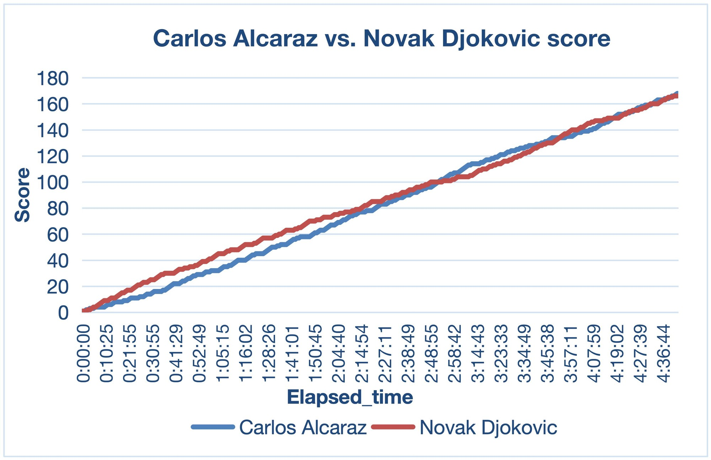
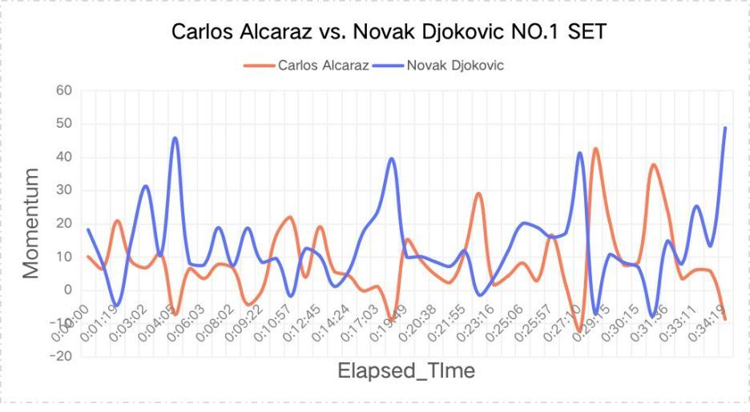
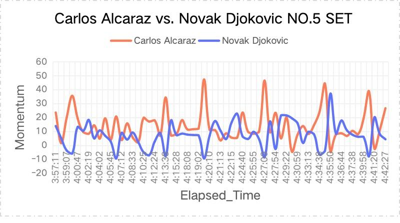
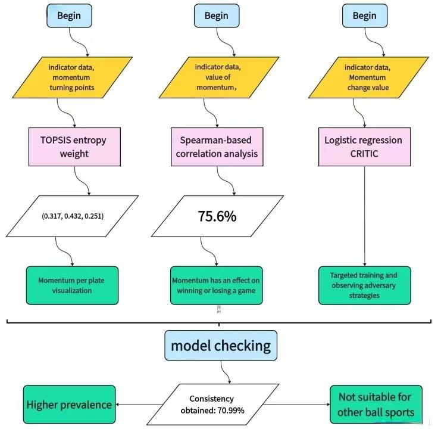
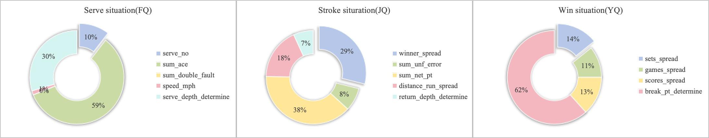

Challenge
Momentum is widely discussed in sport but hard to measure. In 96 hours we had to model it from point-by-point match data and test whether it really relates to who wins.
Mathematical modelling · MCM 2024 · Team leader · Honorable Mention
Quantifying “momentum” point by point in tennis, using the 2023 Wimbledon men’s final between Alcaraz and Djokovic as the main case study.

Momentum is widely discussed in sport but hard to measure. In 96 hours we had to model it from point-by-point match data and test whether it really relates to who wins.
Led a three-person team from problem decomposition to the final paper: built a momentum score from serving, stroking and winning indicators with TOPSIS entropy weights, then tested and explained it with Spearman correlation, logistic regression and CRITIC weighting.
Momentum turning points correlated with match outcome (Spearman 0.756). The logistic model agreed with 70.99% of points in four held-out Medvedev matches. The paper received an Honorable Mention.




| Question | Method | Finding |
|---|---|---|
| How to measure momentum? | TOPSIS entropy weights | Ace, net and break-point indicators carry the most weight |
| Does momentum relate to winning? | Spearman correlation | Turning-point difference vs. match result: 0.756 |
| What makes momentum swing? | Logistic regression + CRITIC | Break points and aces are the most important factors |
| Does it generalise? | Test on four Medvedev matches | 70.99% agreement with actual results |
Full 25-page solution paper, including memorandum and non-technical report.
Credits: Team paper written with two teammates for the 2024 Mathematical Contest in Modeling (Problem C). Match data provided by COMAP as part of the contest.